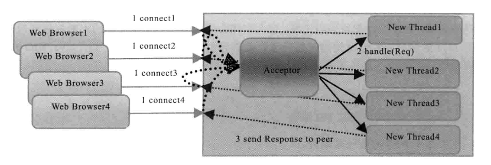
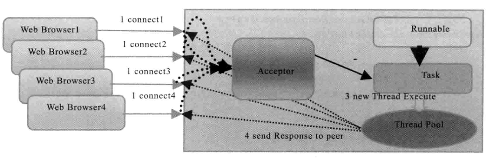
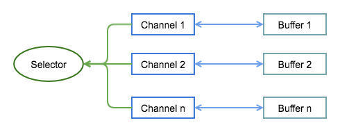
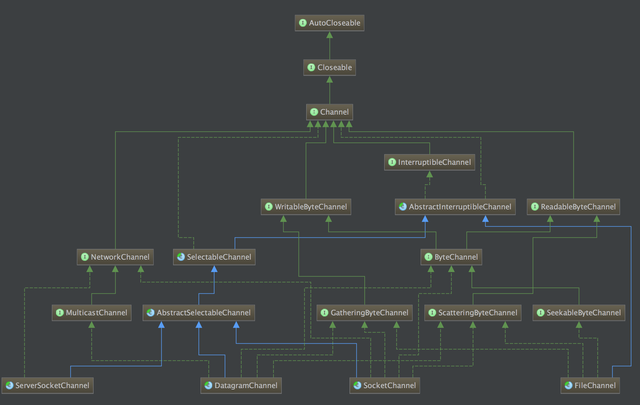
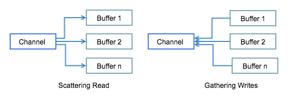
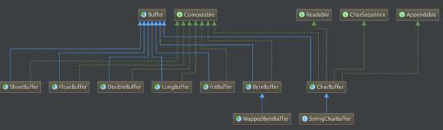
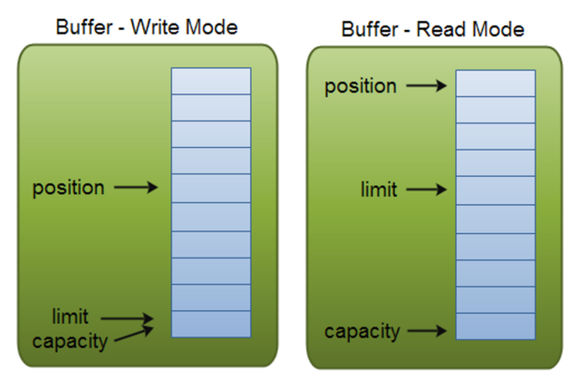
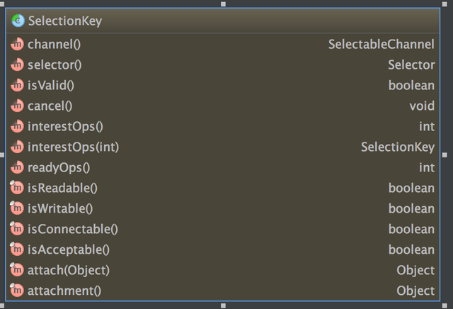
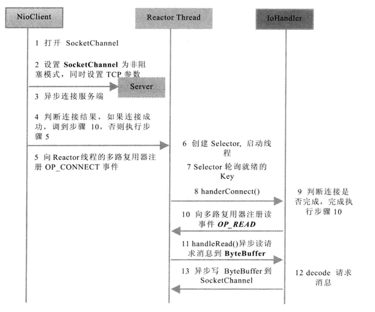
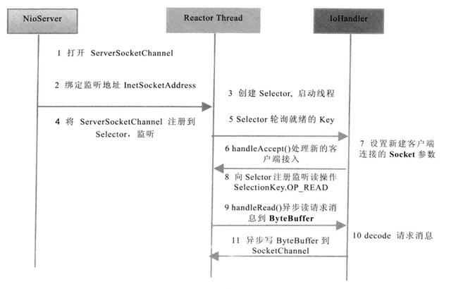

谈一谈 Java IO 模型
Java IO 模型对于 Java 开发工程师来说，是日常工作中经常接触的内容，特别是随着分布式系统的兴起，IO 也显得越来越重要，Java 的 IO 模型本质上还是利用操作系统提供的接口来实现，不熟悉这一部分内容的话，可以先看一下上篇文章Unix 网络 IO 模型及 Linux 的 IO 多路复用模型，本文跟上篇的内容是紧密相连的，特别是本文的重点 —— Java NIO 部分，其底层原理就是 UNIX 的 IO 多路复用，IO 多路复用在上篇文章中讲述了很多。
这篇文章大概内容如下：
- Java IO 模型的简单介绍；
- BIO 、NIO、AIO 模型的介绍，会详细介绍 NIO；
- 几种 IO 模型的对比。
Java IO 模型介绍
在 JDK 推出 Java NIO 之前，基于 Java 的所有 Socket 通信都采用了同步阻塞模式（BIO），这种一对一的通信模型虽然简化了开发的难度，但在性能和可靠性方面却存在这巨大的瓶颈，特别是无法处理高并发的场景，使得 Java 在服务器端应用十分有限。
正是由于 Java 传统 BIO 的拙劣表现，使得 Java 不得不去开发新版的 IO 模型，最终，JDK1.4 提供了新的 NIO 类库，Java 可以支持非阻塞 IO；之后，JDK1.7 正式发布，不但对 NIO 进行了升级，还提供了 AIO 功能。本文就是在对 Java 这些 IO 模型学习后，总结的一篇笔记。
网络编程
网络编程的基本模型是 Client/Server 模型，也就是两个进程之间进行相互通信，其中服务端提供位置信息（绑定的 IP 地址和端口），客户端通过连接操作向服务端监听的地址发起连接请求，通过三次握手建立连接，如果连接成功，双方就可以通过网络套接字（socket）进行通信（可以参考TCP的三次握手和四次挥手），下面先看一下两种对 IO 模型常见的分类方式。
同步与异步
描述的是用户线程与内核的交互方式，与消息的通知机制有关：
- 同步：当一个同步调用发出后，需要等待返回消息（用户线程不断去询问），才能继续进行；
- 异步：当一个异步调用发出后，调用者不能立即得到返回消息，完成后会通过状态、通知和回调来通知调用者。
简单来说就是：
- 同步：同步等待消息通知，消息返回才能继续进行；
- 异步：异步等待消息通知，完成后被调系统通过回调等来通知调用者。
阻塞与非阻塞
阻塞和非阻塞指的是不能立刻得到结果之前，会不会阻塞当前线程。
- 阻塞：当前线程会被挂起，直到结果返回；
- 非阻塞：指在不能立刻得到结果之前，该函数不会阻塞当前线程，而会立刻返回（会导致线程切换的增加）。
举个栗子说明：
| 类别 | 示例 | |
|---|---|---|
| 同步阻塞 | 在银行排队，不干别的事情 | 效率最低 |
| 同步非阻塞 | 排队时，边打电话边抬头看是否到自己了 | 效率低下 |
| 异步阻塞 | 在银行领一个号后，在银行里等，不能做别的事情 | |
| 异步非阻塞 | 领完号后，在忙着自己的事情，直到柜台通知 | 效率较高 |
BIO
BIO 模型是 Java IO 最开始提供的一种 IO 模型，BIO 又可以细分为两种模型，一是传统的同步阻塞模型，二是在对传统 BIO 模型的基本上进行的优化，又称为伪异步 IO 模型。
传统的 BIO 模型
传统 BIO 中，ServerSocket 负责绑定 IP 地址，启动监听端口；Socket 负责发起连接操作，连接成功后，双方通过输入和输出流进行同步阻塞通信。采用 BIO 通信模型的 Server，通常由一个独立的 Acceptor 线程负责监听 Client 端的连接，它接受到 Client 端连接请求后为每个 Client 创建一个新的线程进行处理，处理完之后，通过输出流返回给 Client 端，线程销毁，过程如下图所示（图来自《Netty 权威指南》）。

这个模型最大的问题是：
- 缺乏扩展性，不能处理高性能、高并发场景，线程是 JVM 中非常宝贵的资源，当线程数膨胀后，系统的性能就会急剧下降，随着并发访问量的继续增大，系统就会出现线程堆栈溢出、创建新线程失败等问题，导致 Server 不能对外提供服务。
示例代码参考 Java BIO 示例。
伪异步 IO 模型
为了改进这种一对一的连接模型，后来又演进出了一种通过线程池或者消息队列实现 1 个或者多个线程处理所有 Client 请求的模型，由于它底层依然是同步阻塞 IO，所以被称为【伪异步 IO 模型】。相比于传统 BIO 后端不断创建新的线程处理 Client 请求，它在后端使用一个线程池来代替，通过线程池可以灵活的调配线程资源，设置线程的最大值，防止由于海量并发接入导致线程资源耗尽，过程如下图所示（图来自《Netty 权威指南》）。

看似这个模型解决了 BIO 面对的问题，实际上，由于它是面向数据流的模型，底层依然是同步阻塞模型，在处理一个 socket 输入流，它会一直阻塞下去，除非：有数据可读、可用数据读取完毕、有异常，否则会一直一直阻塞下去。这个模型最大的问题是：
- 阻塞的时间取决于对应 IO 线程的处理速度和网络 IO 的传输速度，处理效率不可控。
Java NIO
Java NIO 是 Java IO 模型中最重要的 IO 模型，也是本文主要讲述的内容，正式由于 NIO 的出现，Java 才能在服务端获得跟 C 和 C++ 一样的运行效率，NIO 是 New IO（或者 Non-block IO）的简称。
与 Socket 类和 ServerSocket 类相对应，NIO 也提供了 SocketChannel 和 ServerSocketChannel 两种不同套接字通道的实现，它们都支持阻塞和非阻塞两种模式。一般来说，低负载、低并发的应用程序可以选择同步阻塞 IO 以降低复杂度，但是高负载、高并发的网络应用，需要使用 NIO 的非阻塞模式进行开发。
基本概念
在 NIO 中有三种非常重要的概念：
- 缓冲区（buffer）：本质上是一个数组，它包含一些要读写的数据；
- 通道（channel）：是一个通道，通过它读写数据，类似于自来水管；
- 多路复用器（selector）：用于选择已经就绪的任务，selector 会轮询注册在其上的 channel，选出已经就绪的 channel。

三者之间的关系如上图所示，这里先简单概括一下：
- Buffer：是缓冲区，任何时候访问 NIO 数据，都是通过 Buffer 进行；
- Channel：通过它读写 Buffer 中的数据，可以用于读、写或同时读写；
- Selector：多路复用器，Selector 不断轮询注册在其上的 Channel，如果某个 Channel 有新的 TCP 链接接入、读和写事件，这个 Channel 就处于就绪状态，会被 Selector 轮询出来，然后通过
SelectionKey()可以获取就绪 Channel 的集合，进行后续的 IO 操作。
下面详细介绍一下这三个概念。
Channel
Channel 是全双工的，可以比流更好地映射底层操作系统的 API，与流也非常相似，有以下几点区别：
- Channel 可以读也可以写，但流（InputStream 或 OutputStream）是单向的；
- 通道可以异步读写；
- 它是基于缓冲区（Buffer）进行读写；
在 Java 中提供以下几种 Channel：
- FileChannel：用于文件的读写；
- DatagramChannel：用于 UDP 数据读写；
- SocketChannel：用于 Socket 数据读写；
- ServerSocketChannel：监听 TCP 连接请求。
这些 Channel 类之间的继承关系如下图所示

从上图中，可以看出，Channel 可以分为两大类：用于网络读写的 SelectableChannel 和用于文件操作的 FileChannel。
其中，FileChannel 只能在阻塞模式下工作，具体可以参考Java NIO FileChannel文件通道。
NIO Scatter/Gather
Java NIO 发布时内置了对 scatter/gather的支持：
- Scattering read 指的是从通道读取的操作能把数据写入多个 Buffer，也就是 scatter 代表了数据从一个 Channel 到多个 Buffer的过程。
- Gathering write 则正好相反，表示的是从多个 Buffer 把数据写入到一个 Channel中。

示例如下，具体参考 Java NIO Scatter / Gather
Buffer
Buffer，本质上是一块内存区，可以用来读写数据，它包含一些要写入或者要读出的数据。在 NIO 中，所有数据都是通过 Buffer 处理的，读取数据时，它是直接读到缓冲区中，写入数据时，写入到缓冲区。
最常用的缓冲区是 ByteBuffer，一个 ByteBuffer 提供了一组功能用于操作 byte 数组，除了 ByteBuffer，还有其他的一些 Buffer，如：CharBuffer、IntBuffer 等，它们之间的关系如下图所示。

基本用法
Buffer 基本用法（读写数据过程）：
- 把数据写入 Buffer；
- 调用
flip()，Buffer 由写模式变为读模式； - Buffer 中读取数据；
- 调用
clear()清空 buffer，等待下次写入。
示例如下：
Buffer 位置信息
Buffer 实质上就是一块内存，用于读写数据，这块内存被 NIO Buffer 管理，一个 Buffer 有三个属性是必须掌握的，分别是：
- capacity：容量；
- position：位置；
- limit：限制；
其中，position 和 limit 的具体含义取决于当前 buffer 的模式，capacity 在两种模式下都表示容量，Buffer 读模式和写模式如下图所示。

- 容量（capacity）
- Buffer 有一块固定的内存，其大小就是 capacity，一旦 Buffer 写满，就需要清空已读数据以便下次继续写入新的数据；
- 位置（Position）
- 写模式时，当写入数据到 Buffer 的时候从一个确定的位置开始，初始化时这个位置 position 为0，写入数据后，position 的值就会指向数据之后的单元，position 最大的值可以达到
capacity-1； - 读模式时，也需要从一个确定的位置开始，Buffer 从写模式变为读模式时，position 会归零，每次读取后，position 向后移动；
- 写模式时，当写入数据到 Buffer 的时候从一个确定的位置开始，初始化时这个位置 position 为0，写入数据后，position 的值就会指向数据之后的单元，position 最大的值可以达到
- 上限（limit）
- 写模式时，limit 就是能写入的最大数据量，等同于 Buffer 的容量；
- 读模式时，limit 代表我们能读取的最大容量，它的值等同于写模式下 position 位置。
Buffer 常用方法
-
flip()：把 buffer 从模式调整为读模式，在读模式下，可以读取所有已经写入的数据； -
clear()：清空整个 buffer； -
compact()：只清空已读取的数据，未被读取的数据会被移动到 buffer 的开始位置，写入位置则紧跟着未读数据之后； -
rewind()：将 position 置为0，这样我们可以重复读取 Buffer 中的数据，limit 保持不变； -
mark()和reset()：通过mark方法可以标记当前的position，通过reset来恢复mark的位置 -
equals()：判断两个 Buffer 是否相等，需满足：类型相同、Buffer 中剩余字节数相同、所有剩余字节相等； -
compareTo()：compareTo 比较 Buffer 中的剩余元素，只不过这个方法适用于比较排序的。
Selector
Selector 是 Java NIO 核心部分，简单来说，它的作用就是：Selector 不断轮询注册在其上的 Channel，如果某个 Channel 上面有新的 TCP 连接、读和写事件，这个 Channel 就处于就绪状态，会被 Selector 轮询出来，然后通过 SelectorKey() 可以获取就绪 Channel 的集合，进行后续的 IO 操作。
一个 Selector 可以轮询多个 Channel，由于 JDK 底层使用了 epoll() 实现，它并没有最大连接句柄 1024/2048 的限制，这就意味着只需要一个线程负责 Selector 的轮询，就可以连接上千上万的 Client。
注册 Channel
举一个栗子，简单介绍 Selector 的使用。
register() 的第二个参数代表的是 selector 监听的事件类型，Selector 可以监听事件类型总共有以下四种：
- SelectionKey.OP_CONNECT：只会注册一次，成功之后（TCP 连接建立之后），这个监听事件就取消了；
- SelectionKey.OP_ACCEPT：主要用于服务端，就是监听是否有新的连接请求；
- SelectionKey.OP_READ：注册之后不会取消，监听是否数据到来；
- SelectionKey.OP_WRITE：最好的使用方法是每当发送数据时，就注册一次，然后再取消，否则每次 select 轮询时，注册 OP_WRITE 事件的 Channel 都是 ready 的，除非 socket send buffer 满了（参考 Communicating between nio OP_READ and OP_WRITE operations）。
SelectionKey
Set<SelectionKey> selectionKeys = selector.selectedKeys(); 返回的是已经就绪的 Channel 集合，SelectionKey 对象的详细属性如下图所示。

NIO 原理
Java NIO 实现的关键是 IO 多路复用（具体可以参考上篇文章：Linux 的 IO 多路复用模型），在 Linux 平台，Java NIO 是基于 epoll（2.6以上，之前是 Select） 来实现的。
Linux 的 select/epoll 使用的是 Reactor 网络 IO 模式。网络编程中，有两种常用的设计模式，它们都是基于事件驱动：
- Reactor 模式：主动模式，应用程序不断去轮询，问操作系统 IO 是否就绪，实际的 IO 操作还是由应用实现（IO 多路复用采用的模式）；
- Proactor 模式：被动模式，操作系统把 IO 完成后通知应用程序，此时数据已经就绪。
这两种模式详细内容可以参考两种高性能 I/O 设计模式 Reactor 和 Proactor一文。
NIO 编程
关于 Java NIO，有两种最常见的使用方式：
- 使用原生的 Java NIO（如 Kafka）；
- 使用 Netty（Hadoop 的 RPC 框架 Avro 底层使用 Netty 做通信框架）。
在实际使用中，推荐第二种，使用 Netty 将会大大提高开发效率，后续会写篇关于 Netty 的文章，介绍一下 Netty 的具体内容，这里使用一个基于 Java 原生 NIO API 的小示例，讲述一下 NIO 的使用方法。
Client 端
NIO Client 创建序列图如下图所示（图片来自《Netty 权威指南》）。

具体的代码及注释参考：NIO Client 端代码。
Server 端
NIO Server 创建序列图如下图所示（图片来自《Netty 权威指南》）。

具体的代码及注释参考：NIO Server 端代码。
IO 模型对比
在对比之前，先简单介绍 Java AIO 模型，这里就不再进行相应的展开了。
AIO
NIO 2.0 中引入异步通道的概念，并提供了异步文件通道和异步套接字导通的实现，它是真正的异步非阻塞I IO，底层是利用事件驱动（AIO）实现，不需要多路复用器（Selector）对注册的通道进行轮组操作即可实现异步读写。
可以参考在 Java 7 中体会 NIO.2 异步执行的快乐
几种 IO 模型功能和特性对比
| 传统 BIO | 伪异步 IO | NIO | AIO | |
|---|---|---|---|---|
| client 数：IO 线程数 | 1：1 | M：N（M 可以大于 N） | M：1 | M：0（不需要额外的线程，被动回调） |
| IO 类型（阻塞） | 阻塞IO | 阻塞IO | 非阻塞IO | 非阻塞IO |
| IO 类型（同步） | 同步 IO | 同步 IO | 同步 IO（IO 多路复用） | 异步 IO |
| 可靠性 | 非常差 | 差 | 高 | 高 |
| 吞吐量 | 低 | 中 | 高 | 高 |
本文主要是对 Java IO 模型总结，特别是对 NIO 模型的总结。
参考